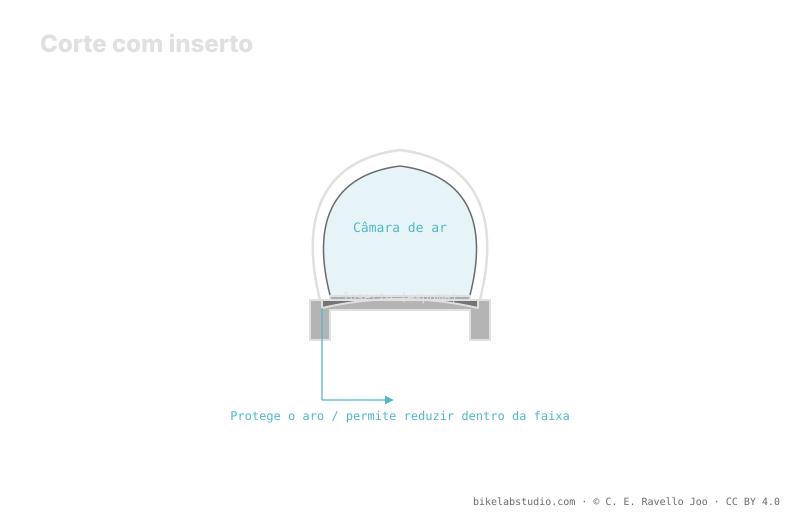

Um inserto é um anel de espuma ou polímero que vai dentro do pneu tubeless e faz três coisas: protege o aro, suporta o flanco e serve de plano B se você perder ar. Famílias como CushCore, Rimpact, Nukeproof ARD ou Vittoria Air-Liner diferem em volume, densidade e filosofia, então nem todos permitem baixar a mesma pressão: o fator de redução é qualitativo, não um desconto fixo. Quanto você pode baixar é fechado pela calculadora junto ao limite de burping.
O inserto não é mágica nem licença para esvaziar sem critério. É uma peça que muda como o pneu se comporta em baixa pressão, e escolher o tipo certo importa mais que a marca.
Com inserto você pode baixar, mas quanto depende do tipo. A Calculadora de Pressão PSI dá sua faixa real por peso, largura e aro. ▶ Abrir a calculadora PSI
Dentro do pneu tubeless, o inserto cumpre três funções que se sobrepõem em grau distinto conforme o modelo: proteção de aro — absorve o impacto quando o pneu chega ao fundo e evita que o aro bata direto na pedra —, suporte do flanco — dá estrutura para que o pneu não dobre em curvas em baixa pressão — e rodagem de emergência — se você perder ar, o inserto sustenta um pouco o pneu para sair do aperto. Nenhum inserto faz as três no máximo ao mesmo tempo.

O inserto é colocado sobre o aro tubeless já com fita de aro, dentro do pneu, antes de fechar o segundo flanco e assentar o talão. Os de grande volume dificultam tanto a montagem quanto o assentamento do talão, então convém técnica, lubrificante ou sabão de montagem e, muitas vezes, um compressor para dar a vazão necessária. Importante: o selante continua obrigatório; o inserto não o substitui, convive com ele.
Protege o aro, suporta o flanco em baixa pressão e dá um plano B para rodar se perder ar. Quanto de cada coisa depende do tipo.
Não. Um de grande volume permite baixar mais que um leve. A redução é qualitativa, não um desconto fixo.
Sobre o aro com fita de aro, dentro do pneu, antes de assentar o talão. Os de grande volume pedem técnica e compressor. O selante continua.
Grande volume (CushCore), perfil médio (Rimpact), leves de aro (Nukeproof ARD) e liners para rodar sem ar (Vittoria Air-Liner).
O inserto amplia o quanto você pode baixar; a Calculadora de Pressão PSI fecha sua faixa real por roda por largura, aro e disciplina. ▶ Abrir a calculadora PSI
© 2026 BikeLab Studio. Conteúdo sob CC BY 4.0: você pode copiar, traduzir e publicar, inclusive com fins comerciais. A citação é obrigatória. Sem atribuição, a licença é revogada automaticamente (CC BY 4.0, §6.a) e o uso passa a ser violação de direitos autorais: solicitamos a retirada do conteúdo e sua desindexação. · Design e propriedade: Carlos Ravello Joo